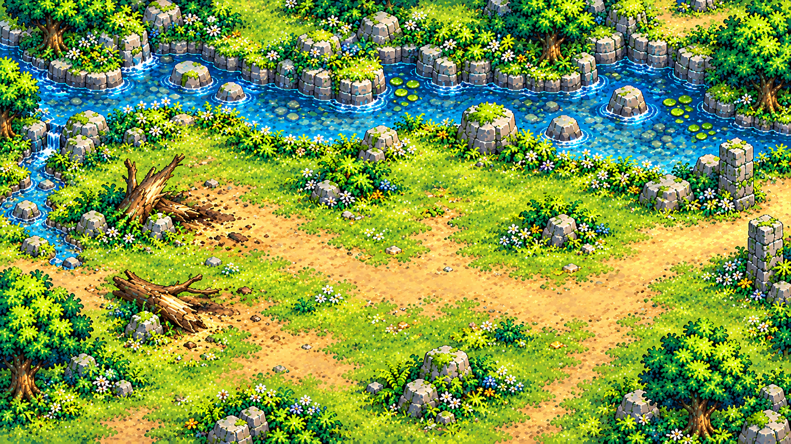

<!doctype html><html lang="pt-BR"><meta charset="utf-8"><title>Zimons · Cenários e colisões v0.11</title><style>
@font-face{font-family:Sora;src:url('/assets/fonts/Sora.ttf')}*{box-sizing:border-box}body{margin:0;background:#11252b;color:#f3e6c3;font:15px Sora,sans-serif;padding:24px}h1{font-size:26px;margin:0 0 10px}header{display:flex;align-items:center;gap:24px}nav{display:flex;gap:8px;flex-wrap:wrap;margin:18px 0}button{padding:9px 14px;border:1px solid #a98e57;border-radius:3px 12px;background:#1f3b42;color:#f3dfae;cursor:pointer}button[aria-pressed=true]{background:#e0c68a;color:#172e32}.layout{display:grid;grid-template-columns:2fr 1fr;gap:20px}canvas{width:100%;height:auto;image-rendering:pixelated;background:#2c4046;border:1px solid #b9a16c}aside img{max-width:100%;image-rendering:pixelated}aside h2{font-size:15px}aside p{font-size:12px;color:#bccfca;line-height:1.6}label{font-size:13px}footer{margin-top:10px;color:#b9c8c3;font-size:12px}</style><header><div><h1>ZIMONS · Cenários do capítulo 1</h1><div id="name">Preparando mapas…</div></div><label><input type="checkbox" id="collision">Mostrar colisões</label></header><nav></nav><div class="layout"><main><canvas width="1536" height="920"></canvas><footer>Inspetor do cenário e das colisões usados no jogo. Esta ferramenta não é uma captura de gameplay.</footer></main><aside><h2>Arte do cenário</h2><p>A rota principal usa os cenários aprovados e as três novas artes da pasta world/v11. O desenho do piso e as colisões são revisados juntos. Cada porta tem seu próprio destino. Os atlas e cenários históricos continuam preservados em assets.</p></aside></div><script type="module">
import {Assets} from '../src/assets.js';import {MAPS} from '../src/maps.js';import {DEFAULT_APPEARANCE} from '../src/model.js';
// Resolve assets from the game root, exactly as in the game loader.
const base=document.createElement('base');base.href='/';document.head.append(base);
const a=new Assets();await a.load();let world='forest';const c=document.querySelector('canvas'),g=c.getContext('2d');
function draw(){const m=MAPS[world],scale=Math.min(c.width/m.size[0],c.height/m.size[1]);g.imageSmoothingEnabled=false;g.fillStyle='#10232c';g.fillRect(0,0,c.width,c.height);g.save();g.scale(scale,scale);g.drawImage(a.tiles.terrain(world),0,0);a.tiles.drawObjects(g,{world,story:{flags:{}}});const [x,y,w,h]=m.bounds;a.draw(g,'female','down',0,x+w*.47,y+h*.6,82,DEFAULT_APPEARANCE,false);a.draw(g,'lira','down',0,x+w*.47+75,y+h*.6,84);
if(document.querySelector('#collision').checked){g.fillStyle='#e3464a66';for(const o of m.objects)if(o.solid)g.fillRect(...o.solid);g.strokeStyle='#efbf67';g.lineWidth=3;g.strokeRect(...m.bounds);}for(const e of m.exits){g.fillStyle='#122c36dd';g.fillRect(e.x-70,e.y+8,140,27);g.fillStyle='#ffe4a3';g.textAlign='center';g.font='14px sans-serif';g.fillText(e.label,e.x,e.y+27);}g.restore();document.querySelector('#name').textContent=m.name;document.querySelector('#map-art').src=m.art?a.images[m.art].src:a.images.tileTerrain.src;for(const b of document.querySelectorAll('nav button'))b.setAttribute('aria-pressed',String(b.dataset.world===world));}
for(const [id,m] of Object.entries(MAPS)){const b=document.createElement('button');b.dataset.world=id;b.textContent=m.name;b.onclick=()=>{world=id;draw();};document.querySelector('nav').append(b);}document.querySelector('#collision').onchange=draw;draw();window.tilesetReady=true;
</script></html>